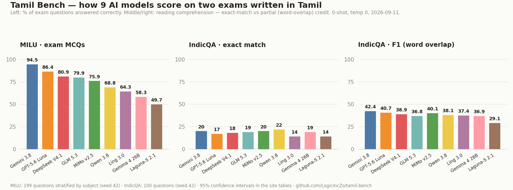

AI models are graded mostly on English. This is a mark sheet for how well frontier models actually handle Tamil — two open exams, nine models, every score reproducible with one command.
AI chatbots are tested on English constantly, and on Chinese, and on a handful of big European languages. Tamil — spoken by ~85 million people, official language of Tamil Nadu, Singapore and Sri Lanka — usually gets one line in a table, if it appears at all.
Tamil Bench fixes the measuring stick. We give AI models two exams, entirely in Tamil script, and publish the marks. Think of it as a report card: anyone can re-run the exam on any model via its API, and every answer sheet is saved so the scores can be checked.
Multiple-choice questions drawn from real Indian competitive exams, in Tamil. Tests whether the model knows things in Tamil — history, law, science, agriculture.
Data: MILU by AI4Bharat (with IBM Research India) — a benchmark of ~80,000 MCQs across 11 Indian languages, built from actual UPSC and state Public Service Commission papers. The Tamil paper has 6,372 questions across 41 subjects (8 domains, from Astronomy to Law); most were written for Tamil exams, not translated. We sit models for a 199-question stratified sample. License: CC-BY-4.0 (gated download on Hugging Face).
Read a Tamil passage, answer a question using a short phrase from it — like school reading comprehension. Tests whether the model can read and quote Tamil precisely.
Data: IndicQA by AI4Bharat (ACL 2023) — a hand-curated reading-comprehension dataset in 11 Indian languages. The Tamil split has 1,804 questions over 253 Wikipedia passages on Indian culture and history (1,276 answerable; 528 deliberately unanswerable to catch bluffing). We grade 100 questions per model with the official SQuAD scoring. License: CC-BY-SA-4.0.
| Model | Accuracy | Bar | 95% CI | |
|---|---|---|---|---|
| 1 | google/gemini-3.8-flashGemini 3.8 Flash | 94.5% | 90.4–96.9 | |
| 2 | openai/gpt-5.6-lunaGPT-5.6 Luna | 86.4% | 81.0–90.5 | |
| 3 | deepseek/deepseek-v4.1-flashDeepSeek V4.1 Flash | 80.9% | 74.9–85.8 | |
| 4 | z-ai/glm-5.3-flashGLM 5.3 Flash | 79.9% | 73.8–84.9 | |
| 5 | xiaomi/mimo-v2.5Xiaomi MiMo v2.5 | 75.9% | 69.5–81.3 | |
| 6 | qwen/qwen3.8-flashQwen 3.8 Flash | 68.8% | 62.1–74.9 | |
| 7 | inclusionai/ling-3.0-flash-vl:freeLing 3.0 Flash VL (free) | 64.3% | 57.5–70.6 | |
| 8 | google/gemma-4-26b-a4b-it:freeGemma 4 26B A4B (free) | 58.3% | 51.3–64.9 | |
| 9 | poolside/laguna-s-2.1:freePoolside Laguna-S 2.1 (free) | 49.7% | 42.9–56.6 | |
| · | nvidia/nemotron-3.5-lightning:freeNemotron 3.5 Lightning (free) | parked — free endpoint congested | ||
0-shot, temperature 0, letter-parse; 199 questions stratified by subject (seed 42); CI = Wilson interval. Machine-readable: results/summary.json. “Running” rows fill in as sweeps finish; parked rows await an off-peak retry.
| Model | Exact Match | F1 | F1 Bar | EM 95% CI | |
|---|---|---|---|---|---|
| 1 | google/gemini-3.8-flashGemini 3.8 Flash | 20.0% | 42.4 | 13.3–28.9 | |
| 2 | openai/gpt-5.6-lunaGPT-5.6 Luna | 17.0% | 40.7 | 10.9–25.5 | |
| 3 | xiaomi/mimo-v2.5Xiaomi MiMo v2.5 | 20.0% | 40.1 | 13.3–28.9 | |
| 4 | deepseek/deepseek-v4.1-flashDeepSeek V4.1 Flash | 18.0% | 38.9 | 11.7–26.7 | |
| 5 | qwen/qwen3.8-flashQwen 3.8 Flash | 22.0% | 38.1 | 15.0–31.1 | |
| 6 | inclusionai/ling-3.0-flash-vl:freeLing 3.0 Flash VL (free) | 14.0% | 37.4 | 8.5–22.1 | |
| 7 | google/gemma-4-26b-a4b-it:freeGemma 4 26B A4B (free) | 19.0% | 36.9 | 12.5–27.8 | |
| 8 | z-ai/glm-5.3-flashGLM 5.3 Flash | 19.0% | 36.8 | 12.5–27.8 | |
| 9 | poolside/laguna-s-2.1:freePoolside Laguna-S 2.1 (free) | 14.0% | 29.1 | 8.5–22.1 | |
| · | nvidia/nemotron-3.5-lightning:freeNemotron 3.5 Lightning (free) | parked — free endpoint congested | |||

EM = answer matches the gold span exactly (after normalization); F1 = token overlap, 0–100. n=100 per model (seed 42).
Every score on this site is tallied from saved answer sheets (results/*.jsonl). Three extracts, exactly as recorded:
Q: பின்வருபவர்களில் தாதா சாஹிப் பால்கே விருது 2013 பெற்ற நபர் யார்? (Who received the Dadasaheb Phalke Award for 2013?)
A. சம்பூரன் சிங்க் கல்ரா (Sampooran Singh Kalra — the poet Gulzar's real name) · B. விஜய ஷேசாஸ்திரி · C. ப்ரன் சிகந் · D. ரமேஷ் அகர்வால்
The model's entire reply: A — nothing else. The parser reads A, the gold is A, one mark. That is the whole contract: answer with a bare letter. When a model writes an essay instead, letter-parse digs the letter out of it — or marks the question wrong.
Passage: கோல்கொண்டா கோட்டை இந்திய தொல்லியல் துறை பட்டியலில் இடம் பெற்றுள்ளது… (The Golkonda fort features in the Archaeological Survey of India's list…)
Q: வெற்றியின் வாயில் எப்படி அழைக்கப்பட்டது? (What was the gate of victory called?) → Official answer: பதே தர்வாசா · MiMo v2.5 answered: “பதே தர்வாசா” — same words, wrapped in quotation marks. Normalization strips the punctuation, so it still scores word-for-word: full marks.
Q: அன்னை தெரேசா எப்போது தனது சேவையைத் தொடங்கினார்? (When did Mother Teresa begin her service?) → Official answer: 1948 · DeepSeek V4.1 answered: 1948 ஆம் ஆண்டில் (“in the year 1948”). The model knows the answer — but adds a grammatical flourish, so exact-match fails while F1 pays half. Best part: all nine models flunked this exact question the exact same way. Multiply it across the paper and you have the whole EM-vs-F1 gap.
The whole bench is one Python file, no GPU, no fine-tuning: it calls models through an OpenAI-compatible API exactly the way a normal user would. Set OPENROUTER_API_KEY, then: